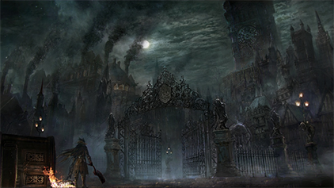
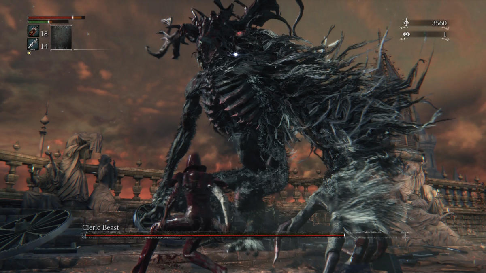
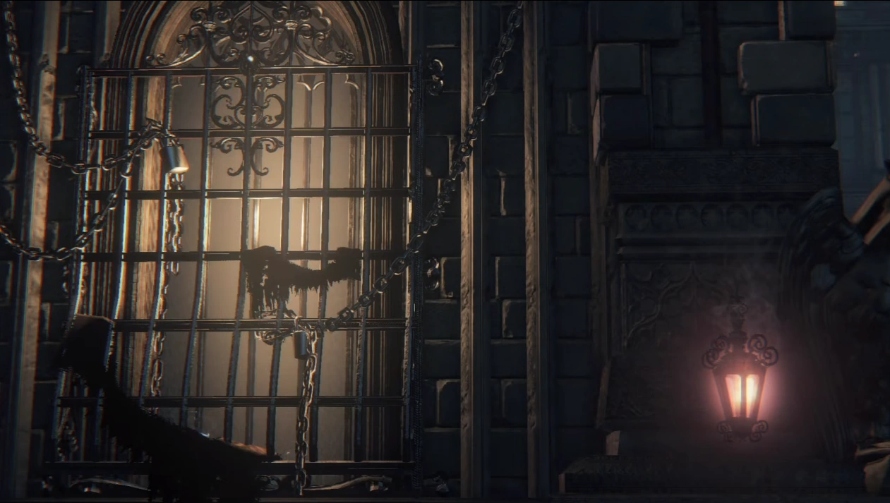
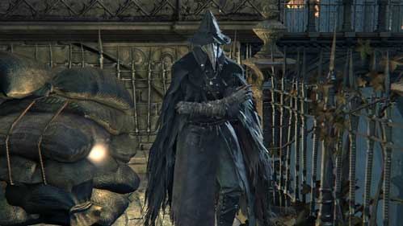

Central Yharnam
Central Yharnam is the first main area of Bloodborne, introducing players to the plague-ridden streets of Yharnam. This area is filled with hostile townsfolk, beasts, and crucial early-game encounters. The area serves as a foundational exploration and combat training ground.
The Beginning of the Game
The game begins with the protagonist, the Hunter, awakening in a clinic after a blood transfusion. This event is the start of the Hunter's journey to uncover the mysteries of Yharnam and its plague. As players progress through the clinic and into Central Yharnam, they encounter their first enemies and start to understand the basic mechanics of combat and exploration.
Bloodborne begins with the player character, known as the Hunter, awakening in Iosefka's Clinic after receiving a blood transfusion. The clinic is named after Iosefka, a doctor who resides there and offers the player a special healing item called Iosefka's Blood Vial. The opening cutscene shows a mysterious old man informing the Hunter about a contract they have signed and a blood transfusion that will be given to them, which will allow them to participate in the "Hunt." The clinic itself is dimly lit and eerie, filled with old medical equipment and bloodstains, setting the tone for the game's unsettling atmosphere. The player quickly encounters their first enemy, a fearsome beast that they must either fight or flee from. The initial confrontation is designed to teach the player the basics of combat and movement. Central Yharnam is the first major area the player explores after leaving Iosefka's Clinic. It is a sprawling, interconnected district of the city of Yharnam, characterized by its Gothic architecture, narrow alleyways, and an oppressive, nightmarish atmosphere. The area is infested with hostile townsfolk and beasts, victims of a widespread plague that has transformed them into monstrous entities.
Bosses
Central Yharnam has two of the most memorable bosses in the whole game.
Cleric Beast
The Cleric Beast is the first optional boss encountered in Central Yharnam. This grotesque creature is a transformed cleric and serves as a test of the player's understanding of the game's combat mechanics. The Cleric Beast's large size and powerful attacks make it a challenging opponent for new players.
Father Gascoigne
Father Gascoigne is the first mandatory boss in the game. He is a hunter who has succumbed to the bloodlust. The fight against Gascoigne is intense, with him using both a large axe and a firearm. The battle is set in a graveyard, and as Gascoigne takes damage, he transforms into a beast, increasing the difficulty of the encounter.

Leave a comment
Lore
Central Yharnam is steeped in lore, reflecting the city's descent into madness. The Healing Church once held great influence here, but their practices led to the spread of the beast plague. The townsfolk, now hostile and transformed, are remnants of Yharnam's former population. Exploring this area reveals clues about the church's experiments and the tragic fate of its citizens.
Father Gascoigne
Father Gascoigne was once a hunter from a foreign land who came to Yharnam to combat the beast scourge. He is characterized by his pragmatic approach to hunting, using both a large axe and a firearm to deal with his foes. His attire suggests he may have been affiliated with the Healing Church, although he primarily operates as an independent hunter. Gascoigne’s descent into madness is a central theme in his story. Like many hunters, he gradually loses his humanity to the bloodlust, transforming into a beast. This transformation is a manifestation of the blood curse that plagues Yharnam, showing how even the most skilled and well-intentioned hunters are not immune to its effects.Gascoigne's Daughters: The Side Quest
The side quest involving Father Gascoigne's daughters is one of the most poignant and heartbreaking in the game. The player encounters a young girl in Central Yharnam, who is hiding in her home and anxiously awaiting the return of her parents, Father Gascoigne and Viola (her mother). The young girl provides the player with a Tiny Music Box, which plays a melody that can briefly stun Gascoigne during the boss fight, giving players a crucial advantage. The music box is a cherished family heirloom, and its melody is a link to Gascoigne’s remaining humanity. As the player progresses, they find Viola’s body near Gascoigne's boss fight area, indicating that she had been searching for her husband but fell victim to the beasts or Gascoigne himself in his transformed state. After defeating Gascoigne, the player can return to the young girl and inform her of her parents' fate. This leads to a series of tragic events where the girl, upon learning about her parents' demise, leaves her home and falls victim to the beasts or meets another untimely end, as indicated by the Red Jeweled Brooch found in the sewers.Cleric Beast
The Cleric Beast was once a cleric of the Healing Church, an organization that wielded significant influence over Yharnam due to its purported ability to heal ailments using the Old Blood. The Healing Church's clerics were responsible for administering blood ministration to the citizens of Yharnam, a practice that was believed to cure diseases and grant extraordinary abilities. However, the use of the Old Blood came with severe, unintended consequences. Prolonged exposure to the blood caused many recipients, including the clerics themselves, to succumb to the beastly scourge. This transformation was both physical and mental, turning them into savage, mindless beasts. The Cleric Beast represents one of these tragic transformations, highlighting the perils of the Healing Church's blood ministration practices.Leave a comment
Sidequests
Gilbert
Gilbert is an ailing outsider who resides in a building near the Central Yharnam lamp. Players can interact with him through a window. Initially, he provides information about Yharnam and the Healing Church. As the game progresses, Gilbert's condition worsens, and he eventually transforms into a beast.
First Interaction: Gilbert offers useful information about the city and mentions that players can find helpful items in Central Yharnam.
Subsequent Interactions: After defeating Father Gascoigne, Gilbert gives players the Flamesprayer, a powerful firearm useful against beasts.
Final Interaction: If players revisit his location later in the game, they find Gilbert transformed into a beast, which they must defeat.

Iosefka's Clinic
Iosefka's Clinic is the starting point of the game, where players first awaken. Iosefka, the doctor, communicates with players through a door. Initially, she provides Iosefka's Blood Vial, a special healing item.
First Interaction: After the first visit, players can return to the clinic and receive another Iosefka's Blood Vial.
Subsequent Interactions: As the game progresses, the real Iosefka is replaced by an imposter conducting unethical experiments. Players can send survivors to the clinic, where they meet a grim fate and are transformed into Kin.
Final Interaction: Players can confront the imposter Iosefka later in the game and discover the true nature of the experiments being conducted in the clinic.
The Little Girl's Quest (Father Gascoigne's Daughter)
This side quest involves a young girl hiding in her home in Central Yharnam. She asks players to find her mother and father (Father Gascoigne and Viola).
First Interaction: The girl gives players a Tiny Music Box, which can be used to stun Father Gascoigne during his boss fight.
Subsequent Interactions: After defeating Father Gascoigne, players can return to the girl. If they have the Red Jeweled Brooch, they can choose to give it to her or withhold the information.
Final Outcome: Regardless of the player's choice, the girl eventually leaves her home and meets a tragic end, indicated by finding her white ribbon in the sewers. Alternatively, players might find her older sister looking for her, leading to more tragic outcomes.
Eileen the Crow
Eileen the Crow is a hunter of hunters who can be found in Central Yharnam. She is a member of the Hunter of Hunters covenant and provides players with valuable advice and a gesture.
First Interaction: Eileen is found in a hidden area near the sewers. She warns players about succumbing to the bloodlust and gives them the "Shake Off Cape" gesture.
Subsequent Interactions: Players can encounter Eileen at various points throughout the game, where she continues her mission to hunt hunters who have gone mad.
Final Interaction: Eileen's questline culminates in a confrontation with a rogue hunter in the Grand Cathedral. Players can assist her in this battle, which significantly impacts her story.
Viola (Father Gascoigne's Wife)
Viola is Father Gascoigne's wife and is part of the tragic story involving Gascoigne and their daughter.
First Interaction: Players find Viola's body near the Tomb of Oedon, indicating she was searching for her husband.
Subsequent Interactions: There are no direct interactions with Viola herself, but her presence and death add depth to Gascoigne's story and the daughter's side quest.
Final Outcome: The Red Jeweled Brooch found on Viola can be used in the Little Girl's quest, revealing more about the family's fate.
Leave a comment